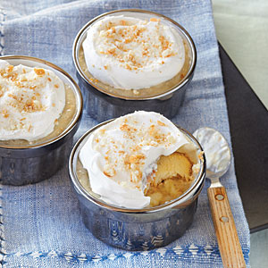

| Roasted Banana Pudding | |
|---|---|
|  |
1. Preheat oven to 350°.
2. Place bananas on a jelly-roll pan covered with parchment paper. Bake at 350° for 20 minutes. Remove 3 bananas; cool completely. Peel and cut into 1/2-inch-thick slices. Bake the remaining 2 bananas at 350° for an additional 20 minutes. Carefully peel and place the 2 bananas in a small bowl, and mash with a fork until smooth. 3. Combine milk and 1/3 cup sugar in a saucepan over medium-high heat. Bring to a simmer (do not boil). 4. Combine remaining 1/3 cup sugar, cornstarch, salt, and eggs in a medium bowl; stir well with a whisk. Gradually add hot milk mixture to sugar mixture, stirring constantly with a whisk. Return milk mixture to pan. Cook over medium heat until thick and bubbly (about 3 minutes), stirring constantly. Remove from heat. Add mashed bananas, butter, and vanilla, stirring until butter melts. Place pan in a large ice-filled bowl for 15 minutes or until mixture comes to room temperature, stirring occasionally. Fold half of whipped topping into pudding. 5. Spread 1 cup custard evenly over the bottom of an 11 x 7-inch baking dish. Top with 20 vanilla wafers and half of the banana slices. Spoon half of remaining custard over banana. Repeat procedure with 20 wafers, banana slices, and custard. Spread remaining half of whipped topping evenly over top. Crush remaining 5 wafers; sprinkle over top. Refrigerate for 1 hour or until chilled. |